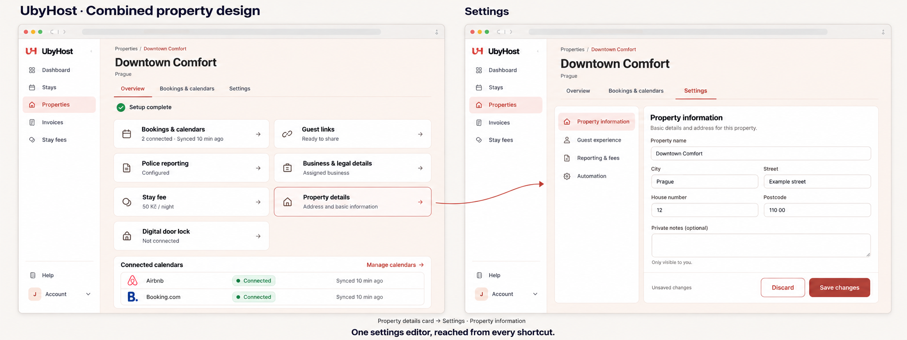
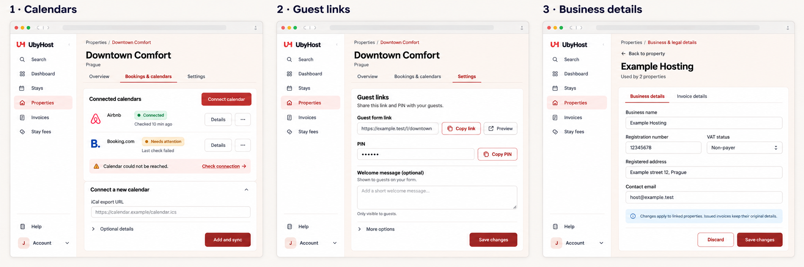
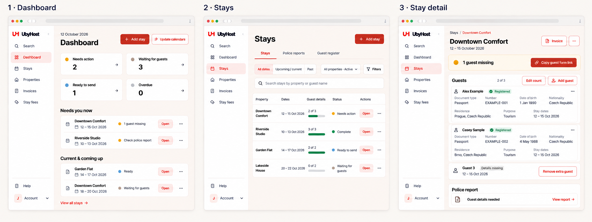
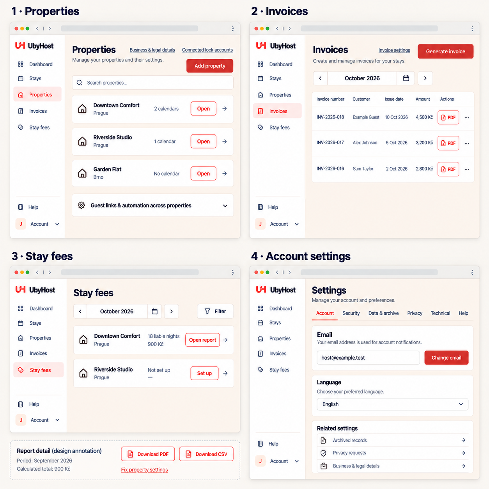
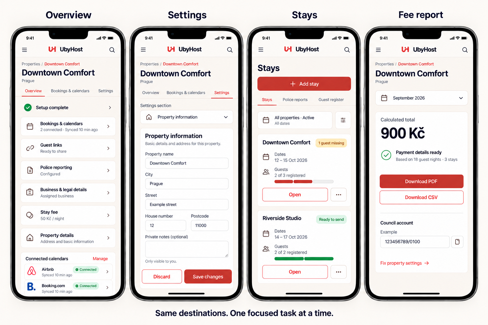

Simple navigation.
One editor for each setting.
Keep the warm visual style and familiar property cards. Give each page a clear task, then link configuration to one shared editing destination.
Five boards cover 16 desktop and mobile views. Open any board to inspect it at full resolution. Property direction was selected in chat; all five design families were approved in chat for implementation and staging review.
These are generated layout concepts with fictional data, not screenshots of implemented pages. Complete fields, real statuses, available actions, English/Czech copy and browser behavior are governed by the plan and current application contracts.
01 · Property overview and settings
Direction selected in chatThree tabs, your existing shortcut cards, and one grouped settings editor. The Property details card opens Settings → Property information.

Keep
- Familiar cards, short summaries and generous click targets.
- Overview · Bookings & calendars · Settings.
- Property information, Guest experience, Reporting & fees, Automation.
Implementation details to preserve
- Full fields, safe validation and drafts across sections.
- Normal-flow Save/Discard; no floating bar over fields.
- Legacy anchors and one canonical property form.
02 · Calendars, guest links and shared business
Approved directionCalendars get their own property tab. Guest links belong in Guest experience. A shared business gets one editor with business and invoice sections.

Review
- Connection status and last check come before full URLs.
- Copy/Preview stay near the guest link; regeneration stays under More options.
- Shared business navigation identifies which properties use it.
Single ownership
- Old guest-link/automation URLs remain redirects.
- No separately editable all-property copies.
- Business changes apply prospectively; issued invoices keep their snapshots.
03 · Dashboard, Stays and stay detail
Approved directionDaily work prioritizes the next action. Lists stay easy to scan, and saved guest facts remain visible inside a stay.

Review
- Quiet state cards and a short prioritized dashboard queue.
- Stays · Police reports · Guest register; filters on demand.
- Next action, then inline guests, then reporting.
Preserve
- All dates default, full counts before the five-row dashboard cap.
- Copy guest form link availability and truthful feedback.
- Reported-record protections and safe removal of extra empty slots.
04 · Properties, invoices, fees and account
Approved directionUse compact lists for finding records and grouped settings for editing. Configuration links always lead to the same editor.

Review
- Property rows with Open and shared business/lock-account links.
- Optional read-only guest-link/automation summary disclosure.
- Invoice PDFs and fee-period reports easy to reach.
Preserve
- Stay invoice eligibility, item layout and snapshots.
- Optional per-property fees, finalized reports and manual markers.
- Account/security/data/privacy scope and role-aware access.
05 · Mobile
Approved directionThe same destinations, adapted to one-column cards and a labelled settings-section selector. Controls stay reachable without a desktop table.

Review
- Cards stacked into one column.
- Property tabs remain discoverable; sections use a labelled selector.
- Dates, guest progress, Open and More remain readable.
Preserve
- At least 44px mobile touch targets.
- Save controls in flow and no horizontal page overflow.
- Full feature access, menu hierarchy and visible environment warnings.
Approved for staged implementation
The owner approved all five boards in chat on 12 October 2026. Follow the detailed execution protocol and numbered briefs. Production remains gated on explicit approval of the implemented staging candidate.
- 01 · Combined property navigation and editor
- 02 · Calendars, guest links and shared business
- 03 · Dashboard, Stays and stay detail
- 04 · Properties, invoices, fees and account
- 05 · Mobile behavior and hierarchy
Next: run readiness 0071, execute released briefs one at a time, test the exact candidate on staging, then request production promotion approval. Keep all delivery merges off main until that approval.